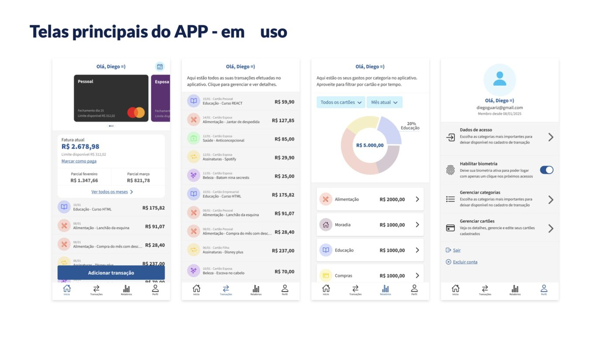
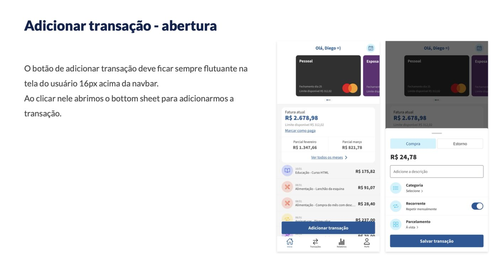
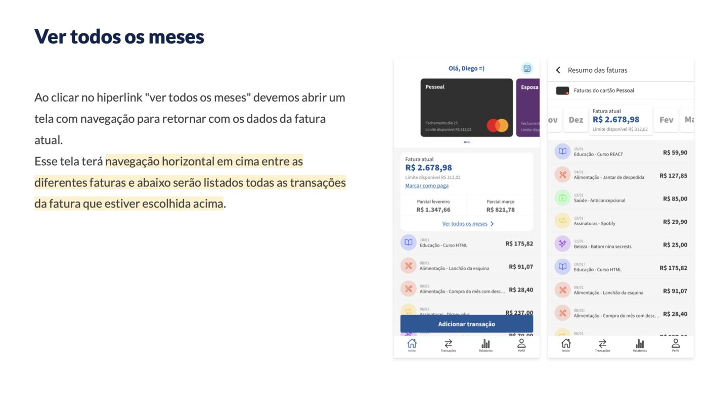
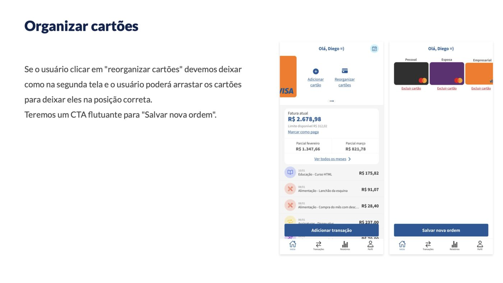
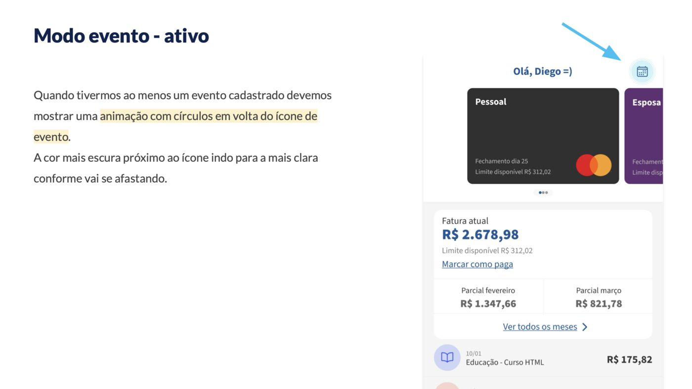
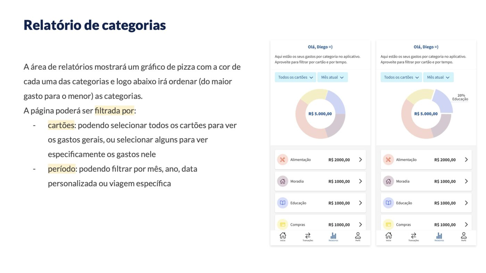
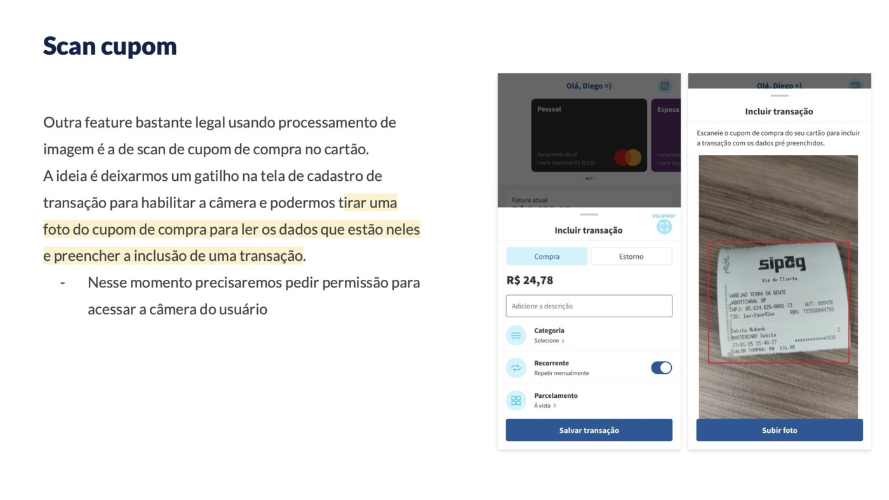
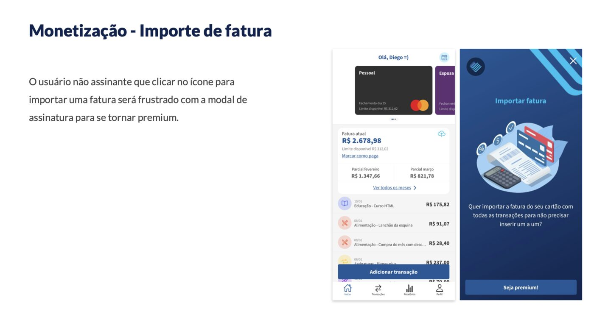

00 TL;DR
Cartãodinho é um projeto pessoal de produto: um app mobile pra organizar gastos em cartões de crédito que fiz do zero — desenhei a proposta de valor, escrevi todas as regras de negócio, mapeei os fluxos e fiz cada uma das telas. O roadmap divide a evolução em três entregas: (1) fluxo principal completo, (2) features de processamento de imagem (scan de cupom e import de fatura) e (3) monetização via premium e anúncios.
01 Visão geral das telas
Quatro telas que sustentam a experiência principal: home com cartão e fatura, log de transações, relatório por categorias e perfil. Tudo pensado pra acesso em uma mão, com o botão flutuante de adicionar transação sempre à 16px da navbar.

02 Roadmap em 3 entregas
Pensei o produto em fases para destravar valor cedo e amadurecer a complexidade no tempo certo:
Fluxo principal completo
Onboarding, cartões, transações, faturas e relatórios.
Cadastro manual ou via Google, login com biometria, gestão multicartão em carrossel horizontal, adição de transação por bottom sheet, navegação entre faturas e relatórios por categoria.
Processamento de imagem
Scan de cupom e import de fatura.
Foto do cupom no caixa lê os dados e pré-preenche a transação; upload de PDF de fatura importa todas as compras de uma vez. Reduz atrito e dependência de digitação manual.
Premium e anúncios
Modelo freemium calibrado.
Scan de cupom e import de fatura ficam exclusivos do premium. Anúncios na entrada do relatório (com gatilho de "pular vira assinar"). Três planos recorrentes com gestão pelo próprio app.
03 Fluxos que desenhei
Adicionar transação
Bottom sheet em camadas com teclado numérico já aberto e foco no valor (primeira ação esperada). Compra/estorno, categoria via segundo bottom sheet, recorrência, parcelamento e default inteligente (última categoria usada).

Ver todos os meses
Navegação horizontal pela linha do tempo de faturas: meses futuros mostram faturas parciais, meses passados mostram as faturas já pagas. Cada item leva ao detalhe da transação, com edição e exclusão (double check pra evitar miss click).

Adicionar e organizar cartões
Carrossel horizontal de cartões termina sempre numa posição "+" com opções de adicionar ou reorganizar. No modo reorganizar, o usuário arrasta os cartões pra ordem que quiser e salva via CTA flutuante.

Modo evento (recurso original)
Funcionalidade que criei pra resolver um problema real: como agrupar gastos sazonais (uma viagem, um casamento, um evento) que cruzam várias categorias. Um evento vira uma "categoria pai" temporária por cartão, com animação no ícone, toggle automático no cadastro de transação e filtro próprio nos relatórios.

Relatório por categorias
Gráfico de pizza com ordenação do maior para o menor gasto. Filtros por cartão (multi-select) e por período (mês atual default, com opção personalizada e por evento). Clique em cada categoria abre detalhe com todos os gastos ordenados.

Scan de cupom (entrega 2)
Atalho na tela de cadastro de transação que abre a câmera. Foto do cupom é processada e os dados preenchem o formulário, mas a confirmação ainda depende do usuário pra evitar erro de leitura ir direto pro banco de dados.

Monetização: freemium e gatilhos
Usuários free veem as features de scan/import como gatilhos de assinatura (modal de planos). Anúncios na entrada do relatório também conduzem ao premium. A escolha do que cobrar vs deixar livre foi pensada pra entregar valor real antes de pedir conversão.

04 Decisões de produto que tomei
- Biometria ofertada uma única vez: oferecemos no primeiro login pós-cadastro e depois deixamos configurável no perfil. Evita insistência e respeita a escolha do usuário.
- Default inteligente no cadastro de transação: tipo "compra" marcado, categoria pré-selecionada com a última usada, parcelamento "à vista" e teclado numérico já aberto com foco no valor.
- Double check em ações destrutivas: excluir cartão, excluir transação e desvincular conta Google sempre passam por bottom sheet de confirmação pra evitar miss clicks.
- Modo evento por cartão: em vez de evento global, a usuária define em quais cartões o evento se aplica (por default, todos selecionados). Mais flexível pra casais ou pra quem separa cartão pessoal do empresarial.
- Subcategorias opt-in: 15 categorias macro vêm habilitadas; subcategorias começam desabilitadas. Isso evita poluir a tela de cadastro de quem prefere manter simples e atende quem precisa de granularidade.
- Comportamento consistente na desabilitação: se você desabilita uma subcategoria que já tem transações, ela continua aparecendo nas telas de log e relatório (preserva o histórico) e só some do cadastro de novas transações.
05 Por que fiz esse projeto
- Treinar produto end-to-end fora do contexto profissional: quis exercitar a habilidade de pegar uma ideia, traduzir em proposta de valor, escrever regra de negócio e desenhar telas sem ter um time de design e eng em volta.
- Pensar monetização desde a concepção: projetar o produto já sabendo o modelo de receita evita decisões de design que conflitam com cobrança depois (gatilhos forçados, paywalls mal posicionados).
- Resolver um problema real do meu dia a dia: a vida com múltiplos cartões e eventos sazonais era mais difícil do que precisava ser. Cartãodinho é o app que eu queria usar.